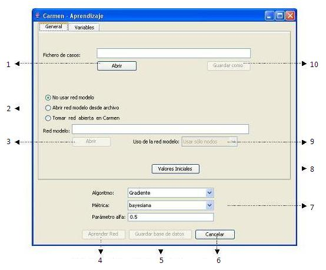
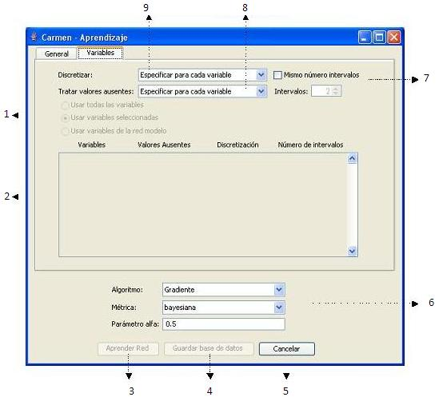

La funcionalidad básica del módulo de aprendizaje de Carmen es el aprendizaje de redes bayesianas a partir de bases de datos en distintos formatos. Acompañando a esta funcionalidad principal, se ofrecen una serie de opciones adicionales encaminadas a facilitar el tratamiento y preprocesamiento de los datos.
El módulo de aprendizaje de Carmen acepta los formatos Elvira, Excel y Weka, que son formatos típicamente utilizados en aprendizaje de redes bayesianas. Además, Carmen permite guardar en cualquiera de estos formatos las bases de datos originales así como bases de datos ya preprocesadas. De este modo, Carmen es una herramienta útil para transformar bases de datos de un formato a otro permitiendo la comparación entre las redes obtenidas con herramientas como Carmen, Elvira o Weka.
El uso de una red modelo permite al módulo de aprendizaje obtener información útil durante el proceso de aprendizaje de una nueva red, facilitando así la labor del usuario. La información obtenida puede referirse a la posición de los nodos en pantalla, al preprocesamiento de las distintas variables o al uso de enlaces fijos durante el proceso de aprendizaje.
El módulo de aprendizaje de Carmen permite el tratamiento de valores ausentes y la discretización de variables continuas. A su vez, cada una de estas opciones se dividen en distintos métodos de preprocesamiento que permiten un adecuado tratamiento de los datos.
Por último, Carmen permite la utilización de distintos algoritmos de aprendizaje, como el algoritmo del gradiente, y distintas métricas de calidad de tipo Bayesiano, de entropía o de mínima longitud de descripción.
Para acceder a la interfaz del módulo de aprendizaje en Carmen basta con seleccionar la opción "Aprendizaje" dentro del menú desplegable "Aprendizaje" o pulsar las teclas Ctrl + L.
Al acceder al módulo de aprendizaje, se nos muestra una pantalla inicial en la que podemos distinguir dos pestañas: La pestaña 'General' (fig. 1) permite cargar y guardar ficheros de bases de datos, así como cargar redes previamente creadas para utilizarlas como modelo durante el aprendizaje. La pestaña 'Variables' (fig. 2) permite seleccionar las variables que van a formar parte de la red y elegir las distintas opciones de preprocesado para cada una de ellas. Además, en la parte inferior de la ventana, se da la opción de elegir el algoritmo de aprendizaje, la métrica y el valor del parámetro alfa a usar en la etapa de aprendizaje paramétrico.

| 1.- Abrir fichero de casos | 6.- Cerrar la ventana |
| 2.- Selección de red modelo | 7.- Elección de algoritmo y métrica |
| 3.- Abrir red modelo | 8.- Reiniciar los valores |
| 4.- Iniciar el aprendizaje | 9- Uso de la red modelo |
| 5.- Guardar base de datos preprocesada | 10.- Guardar fichero de casos |

| 1.- Selección de variables | 6.- Elección de algoritmo y métrica |
| 2.- Variables y opciones de preprocesamiento | 7.- Número de intervalos en la discretización |
| 3.- Iniciar el aprendizaje | 8.- Opciones de tratamiento de valores ausentes |
| 4.- Guardar base de datos preprocesada | 9.- Opciones de discretización |
| 5.- Cerrar la ventana |